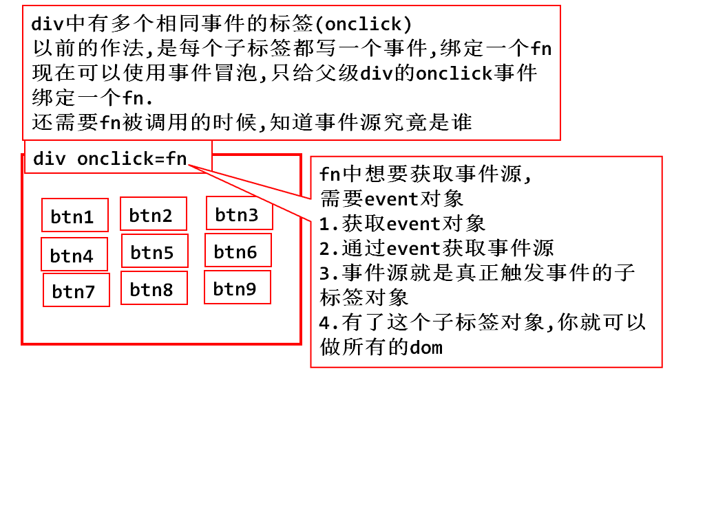

1. nodeName/nodeType
2. innerHTML/innerText
3. value
4. getAttribute/setAttribute
.className .id .style
1. ById
2. ByTagName
3. parentNode/ByTagName()
4. ByName
1. createElement(TagName)
2. parent.appendChild(newNode)
3. parent.insertBefore(newNode,弟弟对象)
4. parent.removeChild(节点对象)
<body>
省:
<select onchange="chg();" id="province">
<option value="-1">请选择</option>
<option value="0">河北省</option>
<option value="1">山东省</option>
<option value="2">江苏省</option>
</select>
市:
<select id="city">
<option>请选择</option>
</select>
</body>
<script type="text/javascript">
var cities=[
["石家庄","保定","张家口"],
["济南","德州","青岛","蓬莱"],
["南京","常州","无锡","张家港"]
];
function chg(){
//1.获得省的下拉选对象
var sel1=document.getElementById("province");
//2.获取value,value就是二维数组的index
var index=sel1.value;
//3.创建pcities保存正确二级城市的数据
var pcities=cities[index];
//4.删除旧的城市(sel2中的option)
var sel2=document.getElementById("city");
var options=sel2.getElementsByTagName("option");
/*for(var i=1;i<options.length;i++){
sel2.removeChild(options[i]);
} //上面这个循环算法有问题*/
/* for(var i=options.length-1;i>0;i--){
sel2.removeChild(options[i]);
} */
sel2.innerHTML="<option>请选择</option>";
//添加新城市,追加一批option
if(pcities){
for(var i=0;i<pcities.length;i++){
//创建一个新option对象
var option=document.createElement("option");
//给新option添加内容
option.innerHTML=pcities[i];
//挂到sel2上
sel2.appendChild(option);
}
}
}
</script>
- onclick
- ondblclick
- onmouseover//鼠标悬停
- onmouseout//鼠标离开
- onmousedown//鼠标按下事件
- onmouseup//鼠标抬起事件
- onkeydown
- onkeyup
- onload
- onchange
- onfocus//焦点获取
- onblur//失去焦点
- onsubmit
在标签属性中,直接处理事件
js代码中动态定义,可以把html代码和js代码分离,好维护
window.onload=function(){
var input=document
.getElementsByTagName("input")[0];
input.onclick=fn2;
}
function fn2(){
console.log("动态定义事件绑定");
}
取消事件 onXXX="return false";
<div style="border: 2px solid black;height: 100px;"
onclick="alert('DIV');">
<p style="border: 2px solid #f00;height: 50px;"
onclick="alert('P');">
div--p--btn
<input type="button" value="事件冒泡的演示"
onclick="alert('input');">
</p>
</div>
1. event.stopPropagation();
2. event.cancelBubble=true;
- 事件触发后,会自动产生一个event

在html属性中直接使用event对象
在js代码块中,直接使用event对象
在函数中使用event对象,必须以传参的方式
function fn2(event){ alert(event.clientX+':'+event.clientY); }
<!-- 获取事件源 -->
<input type="button" value="事件源_IE-chrome"
onclick="fn3(event);">
function fn3(event){
var obj=event.srcElement;
console.log(obj);
}

<div>
<input type="button" value="X" onclick="fn(this);">
<input type="button" value="X" onclick="fn(this);">
<input type="button" value="X" onclick="fn(this);">
<input type="button" value="X" onclick="fn(this);">
</div>
<script type="text/javascript">
function fn(btn){
var oDiv=btn.parentNode;
oDiv.removeChild(btn);
}
</script>